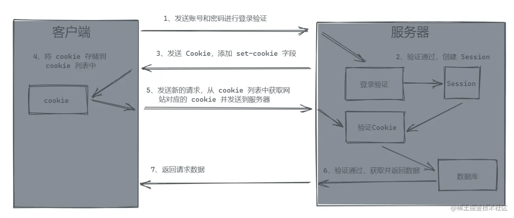
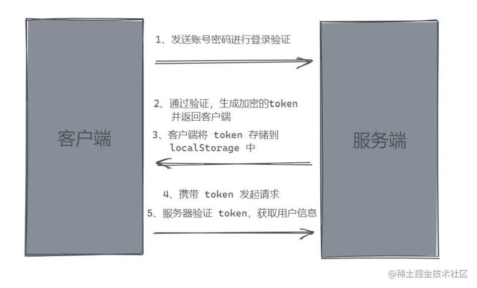

浏览器存储
概念
cookie, sessionStorage, localStorage
以上都是保存在浏览器端的
- 保存方式
cookie数据在http请求中携带，即在浏览器和服务器间来回传递sessionStorage和localStorage仅在本地保存
- 存储大小
cookie不能超过4k，并且由于每次http请求都会携带，所以只适合保存很小的数据，例如会话表示sessionStorage和localStorage可以达到5M或更大
- 数据有效期
sessionStorage仅在浏览器窗口关闭前有效localStorage始终有效，用作持久化存储cookie只在设置过期时间之前有效
- 作用域
sessionStorage不在不同的浏览器窗口中共享，即使是同一个页面localStorage和cookie在所有同源窗口中共享
访问页面流程
- URL解析
- DNS查询
- TCP连接
- 处理请求
- 接受响应
- 渲染页面
浏览器垃圾回收机制
介绍
浏览器的JavaScript具有自动垃圾回收机制（GC, Garbage Collecation），执行环境会负责管理代码执行过程中使用的内存。垃圾收集器会定期找出哪些不在继续使用的变量，然后释放其内存。
不再使用的变量也就是生命周期结束的变量，只可能是局部变量。在函数执行过程中，会给局部变量在堆栈上分配相应空间。注意闭包由于内部函数的原因，外部函数不能算结束。
全局变量的生命周期直至浏览器卸载页面才会结束。
垃圾收集器需要确定那个变量没有使用，通常有以下两种方式：标记清除和引用计数
标记清除
是JS中最常用的垃圾回收方式，IE9+，Firefox，Chrome的JS实现都是采用该策略
- 垃圾收集器在运行时给内存中所有变量加上标记
- 然后除去环境中变量以及被环境中变量引用的变量（闭包）的标记
- 此后带标记的变量将被视为准备删除，因为环境中变量无法访问到
- 最后垃圾收集器完成内存清除工作，销毁那些带标记的值，并回收空间
引用计数
引用计数是跟踪记录每个值被引用的次数
- 当声明一个变量并将一个引用类型值赋给该变量时，这个值引用次数为1
- 相反，如果包含对这个值引用的变量又取得另一个值，该值的引用次数减1
- 值的引用次数为0时，说明无法再访问，可以将其内存收回
1 | function test() { |
token与cookie
「cookie」
类型为小型文本文件，是某些网站为了辨别用户身份，进行session跟踪而存储在用户本地终端上的数据，由用户客户端计算机暂时或永久保存的信息
为什么需要cookie？
接口通过HTTP进行数据交换，每次链接都是独立存在的，因此每次都需要重新验证身份
cookie的出现可以弥补HTTP无状态的问题，cookie可以作为一个状态保存的状态机，用来保存用户的相关登录状态
- 第一次验证通过后，服务器通过
set-cookie令客户端将自己的cookie保存起来 - 下一次发送请求时，直接带上cookie即可
- 服务器检测到客户端发送的cookie与其保存的cookie值一致，则直接信任链接，不再验证

语法
1 | document.cookie = "name=value; expires=evalue; path=pvalue; domain=dvalue; secure;” |
name=value：必选参数，这是一个键值对，分别表示要存入的属性和值1
2
3document.cookie="name=中文";
//为了防止中文乱码，我们可以使用encodeURIComponent()编码；decodeURIComponent()解码
document.cookie = encodeURIComponent("name")+"="+encodeURIComponent("中文");expires=evalue：可选参数，对象有效时间，只支持GTM标准时间，需要toUTCString()进行时间转换1
2var date = new Date();
document.cookie="name=vae;expires="+date.toUTCString();path=pvalue：可选阐述，限制访问cookie的目录domain=dvalue：可选参数，限制只有设置了的域名才能访问secure=true|false：可选参数，默认true不安全传输，否则必须通过https才能获得cookie
「token」
token，令牌，代表执行某些操作的权利的对象。简单来说，就是类似 cookie 的一种验证信息
- 客户端通过登录验证后，服务器会返回给客户端一个加密的 token
- 然后当客户端再次向服务器发起连接时，带上token
- 服务器直接对token进行校验即可完成权限校验
为什么还需要 Token？
- Cookie 作为 HTTP 规范，其出现历史久远，因此存在一些历史遗留问题，比如跨域限制等。Cookie 作为 HTTP 规范中的内容，其存在默认存储以及默认发送的行为，存在一定的安全性问题
- 相较于 Cookie，token 需要自己存储，自己进行发送，不存在跨域限制，因此 Token 更加的灵活，没有 Cookie 那么多的“历史包袱”束缚，在安全性上也能够做更多的优化。
Token 传递过程

Token 的优势
- cookie内存只有4kb，主要存储用户id，其他用户信息存储在服务器的session中
- Token没有内存限制，用户信息可以存储Token中，返回给用户自行存储。减少了服务器的存储压力
This is copyright.